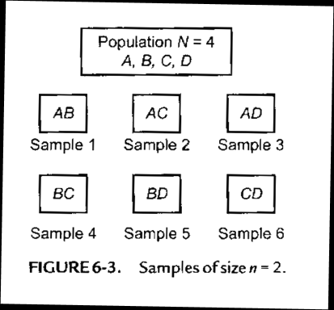
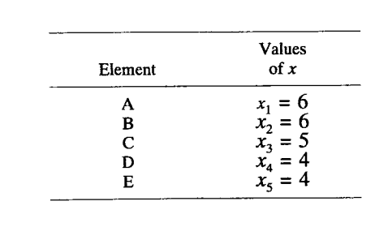
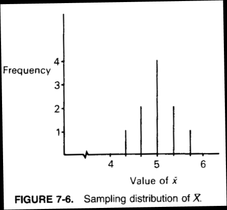
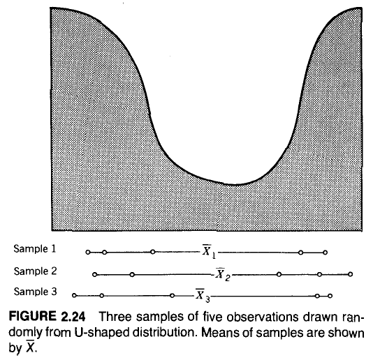
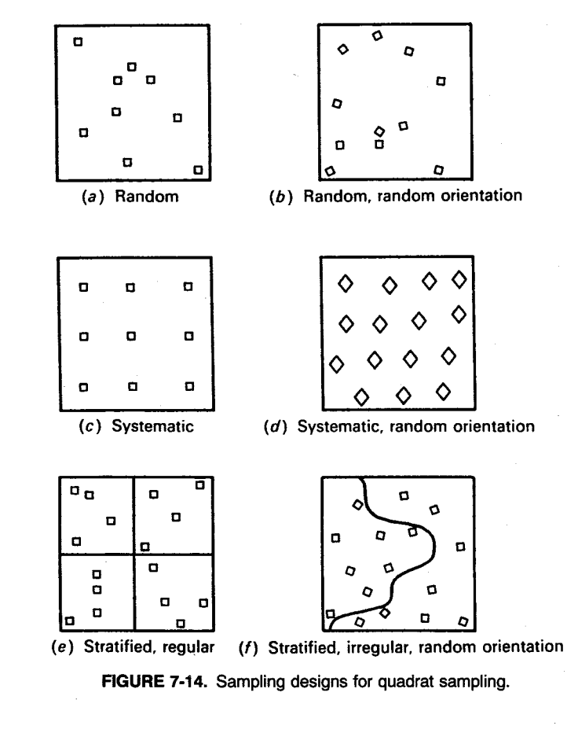
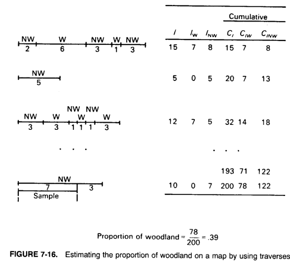

Chapter 06: Sampling
Sampling Theory and Random Sampling Designs
1 Introduction
1.1 Sampling Objectives
- Sampling ultimately aims to gain information about the underlying population by using a sample of observations from the population. The information could be used to:
- approximate the distribution of the underlying population, or
- to estimate some of its distributional parameters (e.g., central tendency, variability, regression coefficients etc.)
- General questions to be addressed before proceeding with sampling:
- How do we obtain a representative sample from the underlying population?
- Which objects and how many objects must be included into the sample to provide on average from sample to sample an accurate snapshot of the total underlying population?
- Lack of representativeness leads to a biased sample.
Example: Industrious students are more likely to be on campus. Random interviews on campus have the tendency to oversample this group.
- Due to the nature of random sampling (one sample will be different from any other sample), the information obtained from sampled observations always will deviate to some degree from the underlying population → we just should aim at making these deviations small and well balanced.
1.2 Impact of Sample Size
The likelihood of obtaining a representative sample increases as we sample a larger representative cross-section of the population. Again: avoid biases.
Representative cross-section means that no particular sub-group of the population should be favored to be included into or excluded from the sample.
Counterexample: Estimation of election outcomes in the “big data” article. The Literary Digest only sampled affluent people (i.e., their subscribers) about their presidential election attitudes.
- Uncertainty is the price we pay for not fully enumerating every object of the underlying population.
1.3 Key Definitions
1.3.1 Sampling Error
Definition: Sampling error is the uncertainty that arises by working with a (random) sample rather than with the entire population.
1.3.2 Sampling Bias
Definition: Sampling bias occurs when the procedure used to draw sample observations selectively favors the inclusion and/or suppression of specific population members. This sample is not representative of the underlying population.
1.3.3 How to Avoid Sampling Bias
Sampling bias can be avoided by implementing:
[a] a general understanding of the underlying population
[b] an appropriate sampling plan
[c] check for recording errors of the sampled data
2 The Relevant Population Under Investigation
Key question: For exactly which population do we want to make inferential statements?
This is a decision of inclusion and exclusion of objects into the sampling frame that becomes the basis for the sampling procedure.
A strict and operationally useful definition of the population for which we want to make a statement is required.
Each member in the population must have an equal chance (or calculable chance) of entering the sample. Or at least we need to know its probability of being included into the sample to adjust for biases by weighting.
Also consider the costs, time and geographical limitations to draw a sample.
3 Sampling Design
Definition: Sample Design: A sample design describes the specific procedure used to select objects from the sampling frame.
- Randomness will control with high likelihood for any biases by balancing the over- and under-representativeness of specific sub-groups.
4 Simple Random Sampling
4.1 Probability Sample
Definition: The probability of any individual member of the population being selected into the sample can be determined.
4.2 Simple Random Sample from a Finite Population
Definition: A simple random sample from a finite population of size \(N\) is one in which each possible sample object has an equal selection probability.
Simple random sampling does not rule out the chance of obtaining a set of extreme sample observations. However, since we know the selection probability, we can calculate the probability of obtaining such an extreme sample.
With increasing unbiased sample size, the probability of obtaining an extreme sample is decreasing.
4.2.1 Example: Enumeration of Sample Combinations
Full enumeration of all combinations of 2 sample objects out of a population of 4 without repetition:
\[\binom{4}{2} = \frac{4!}{(4-2)! \cdot 2!} = 6\]

4.2.2 Problem: Dependent Draws
Sampling without replacement leads to statistically dependent draws. The probability of selecting the second observation changes after the first observation has been selected.
4.2.3 Independence Approximation
Rather than enumerating all possible combinations as in Figure 6-3:
We can assume for large enough populations in which each member in the population has an equal probability of being selected into the sample.
Therefore, the individual draws of sample members become approximately statistically independent among each other.
Thus, the probability of any set of sampled members can be approximated by the individual probabilities:
\[\Pr(\omega_1 \cap \omega_2 \cap \cdots \cap \omega_n) = \Pr(\omega_1) \cdot \Pr(\omega_2) \cdots \Pr(\omega_n) = \pi^n\]
which assumes independence of each object \(\omega_i\) being drawn into the sample with probability \(\pi = \frac{1}{n}\).
5 Sampling Distributions of a Statistic
5.1 Population Parameters vs Sample Statistics
- Recall: the population parameters are denoted by Greek characters, e.g., \(\mu\) and \(\sigma^2\), and the sample statistics are denoted by Latin letters or have a hat on top, e.g., means \(\bar{x}\) and \(s^2\) or by the population parameter with a hat on top, i.e., \(\hat{\mu}\) and \(\hat{\sigma}^2\), respectively.
5.2 Definition: Sample Statistic
A sample statistic is itself a random variable – because it is based on the random set of variables \(X_1, X_2, \ldots, X_n\) in the sample – that ties these individual random variables together through some functional expression.
Example: The sample statistic function is:
\[\bar{X} = \frac{1}{n} \cdot \sum_{i=1}^{n} X_i\]
(notice use of random variables, i.e., large caps letters) and its random outcome for a particular sample becomes:
\[\bar{x} = \frac{1}{n} \cdot \sum_{i=1}^{n} x_i\]
6 Sampling Distributions
6.1 Definition
Definition: Sampling Distribution of a Statistic: A sampling distribution is a probability distribution of a sample statistic.
That is, the sample statistic must have a distribution because it is calculated from a set of random variables.
6.2 Developing the Sampling Distribution
The sampling distribution of a statistic can be, in theory, developed:
[1] by taking all possible samples of size \(n\) from a population,
[2] calculating the values of the sample statistic for each of these sampling outcomes, and
[3] drawing the distribution of the values of the observed sample statistic.
6.3 Example: Distribution of the Sample Mean
Evaluate the distribution of the sample mean based on \(n = 3\) random draws without replacement and irrespectively of their order from a population of size \(N = 5\).



6.3.1 Expected Value of the Sampling Distribution
This distribution can be characterized by its expected value:
\[E(\bar{X} \mid n = 3, N = 5) = \frac{1}{10} \cdot 4.3 + \frac{2}{10} \cdot 4.7 + \frac{4}{10} \cdot 5.0 + \frac{2}{10} \cdot 5.3 + \frac{1}{10} \cdot 5.7 = 5.0\]
6.3.2 Variance of the Sampling Distribution
\[Var(\bar{X} \mid n = 3, N = 5) = \frac{1}{10} \cdot (4.3 - 5.0)^2 + \frac{2}{10} \cdot (4.7 - 5.0)^2 + \frac{4}{10} \cdot (5.0 - 5.0)^2 + \frac{2}{10} \cdot (5.3 - 5.0)^2 + \frac{1}{10} \cdot (5.7 - 5.0)^2 = 0.134\]
with \(\sqrt{Var(\bar{X} \mid n = 3, N = 5)} = 0.366\)
6.4 Unbiasedness
If the expected value of the sample statistic is equal to the expected value in the population, then the sampling statistic is said to be unbiased.
We usually prefer statistical estimation rules that are unbiased.
6.5 Standard Error
The standard deviation of the sampling statistics is called the standard error. For the mean statistic its standard error is denoted by \(s_{\bar{X}}\).
The standard error measures the degree of uncertainty that the sample statistic will deviate from its expected population value.
We prefer statistical estimation rules that lead to small standard errors (i.e., small uncertainty).

7 Central Limit Theorem
7.1 Definition
Definition: Central Limit Theorem: Let \(X_1, X_2, \ldots, X_n\) be a random independent sample of size \(n\) drawn from an arbitrarily distributed population with expectation \(\mu\) and standard deviation \(\sigma\). Then for large enough sample sizes \(n\), the sampling distribution of the mean \(\bar{X}\) is asymptotically (i.e., as \(n \to \infty\)) normal distributed with:
\[\bar{X} \sim \mathcal{N}(\mu, \sigma^2/n)\]
7.2 Two Parts of the Theorem
7.2.1 Part 1: Expected Value and Variance
Irrespectively of the sample size the expected value of the mean \(\bar{X}\) is:
\[E(\bar{X}) = \mu\]
and its variance is:
\[Var(\bar{X}) = \sigma^2/n\]
Note, \(n\) in the denominator. Therefore, as the sample size \(n\) increases the standard error (or variance) \(s_{\bar{X}} = \sqrt{\sigma^2/n} = \frac{\sigma}{\sqrt{n}}\) of the mean will shrink.
7.2.2 Part 2: Asymptotic Normality
Asymptotically the sample mean will follow a normal distribution irrespective of the underlying distribution of the population.
7.2.3 Proof for Independent Sample Objects
\[Var\left(\frac{1}{n} \cdot \sum_{i=1}^{n} X_i\right) = \frac{1}{n^2} \cdot \sum_{i=1}^{n} Var(X_i) = \frac{1}{n^2} \cdot \underbrace{n \cdot \sigma^2}_{=\sigma^2} = \frac{\sigma^2}{n}\]

7.3 Example: Central Limit Theorem Simulation
Example: Central limit theorem with the R-script CENTRALLIMIT.R:

8 Random Sampling Designs
8.1 Objectives
The objective of sampling theory is to develop sampling plans and statistics that lead to the most precise estimators of population properties that we are interested in, i.e., estimators with low uncertainty (standard error) and control for any biases.
This is an optimization problem, perhaps, under constraints.
8.2 Weighting to Control for Biases
Weighting can control for biases:
The impact of observations with a higher probability of being selected into the sample need to be weighted down, and
The impact of observations with lower selection probability needs to be weighted upwards.
This may achieve representativeness.
9 Stratified Random Sampling
(Statistical details are not test relevant)
9.1 Definition
Definition: Stratified Random Sampling: A stratified random sample is obtained by:
[1] splitting the population into \(k\) preferably homogeneous groups – also called strata – and
[2] selecting a simple random samples of a predetermined size \(n_j\) from each stratum \(j\).
The observed sample statistics from these strata-specific samples are then combined into the global sample statistic. Each stratum will have a stratum-specific weight.
9.2 Homogeneity Assumption
External knowledge is required to split the population into \(k\) preferably homogenous strata (the objects in each strata are similar with respect to desired attributes).
External proxy variables that are closely correlated with the measure attributes can be used as surrogates to define the strata.
Homogeneity means that the variances of the sub-populations within each stratum are less than the overall population variance.
9.3 Advantage
The additional control leads to a reduction in the overall sampling error while maintaining unbiasedness.
9.4 Strata-Specific Data Structure
The underlying strata-specific data structure for \(k\) strata becomes:
| Strata | 1 | 2 | \(\cdots\) | \(k\) |
|---|---|---|---|---|
| Size | \(N_1\) | \(N_2\) | \(\cdots\) | \(N_k\) |
| Variance | \(\sigma_1^2\) | \(\sigma_2^2\) | \(\cdots\) | \(\sigma_k^2\) |
| Sampling cost per unit | \(c_1\) | \(c_2\) | \(\cdots\) | \(c_k\) |
| Population | \(\{X_{1,1}, X_{2,1}, \ldots, X_{N_1,1}\}\) | \(\{X_{1,2}, X_{2,2}, \ldots, X_{N_2,2}\}\) | \(\cdots\) | \(\{X_{1,k}, X_{2,k}, \ldots, X_{N_k,k}\}\) |
| Outcome: Strata-specific sample size | \(n_1\) | \(n_2\) | \(\cdots\) | \(n_k\) |
9.5 Challenges of Stratification
We must have some external knowledge about the population characteristics to stratify it properly so that the internal strata variances become small.
The strata membership for each object in the population must be known.
The sub-population size in each stratum must be known.
We should have a rough idea of the costs of obtaining a sample observation from each stratum. These costs may vary from stratum to stratum.
9.6 Estimates
9.6.1 Strata Means
\[\bar{x}_j = \frac{1}{n_j} \cdot \sum_{i=1}^{n_j} x_{i,j}\]
9.6.2 Strata Variance
\[s_j^2 = \frac{1}{n_j - 1} \cdot \sum_{i=1}^{n_j} \left(x_{i,j} - \bar{x}_j\right)^2\]
9.7 Overall Estimated Mean and Variance
The overall estimated mean and variance become weighted estimates of the strata statistics:
9.7.1 Overall Mean
\[\bar{x}_{overall} = \frac{1}{N} \cdot \sum_{j=1}^{k} N_j \cdot \bar{x}_j\]
9.7.2 Overall Variance
\[s_{overall}^2 = \underbrace{\frac{1}{N} \cdot \sum_{j=1}^{k} N_j \cdot s_j^2}_{\text{within strata variation}} + \underbrace{\frac{1}{N} \cdot \sum_{j=1}^{k} N_j \cdot \left(\bar{x}_j - \bar{x}_{overall}\right)^2}_{\text{between strata variation}}\]
Note: Not weighting the strata statistics leads to biased overall estimates.
9.8 Population and Sample Size Constraints
The total population size is \(N = N_1 + N_2 + \cdots + N_k\) and for each sub-population \(N_j \geq 2\).
The stratum-specific sample size \(n_j\) needs to satisfy the constraints:
- \(0 \leq n_j \leq N_j \quad \forall j \in \{1, 2, \ldots, k\}\)
- \(n_j\) needs to be integer numbers
- For large \(N_j\) usually sampling with replacement is assumed to make calculations easier.
9.9 Optimization Problem
The optimization problem to determine the best strata sample sizes \(\{n_1^*, n_2^*, \ldots, n_k^*\}\) becomes:
9.9.1 Objective Function
The optimal sampling plan \(\{n_1^*, n_2^*, \ldots, n_k^*\}\) for \(\bar{x}_{overall} = \frac{1}{N} \cdot \sum_{j=1}^{k} N_j \cdot \bar{x}_j\) can be analytically determined by minimizing the standard error of the global estimator (objective function):
\[\min_{n_1, n_2, \ldots, n_k} Var\left(\underbrace{\frac{1}{N} \cdot \sum_{j=1}^{k} N_j \cdot \bar{x}_j}_{\bar{x}_{global}}\right) = \sum_{j=1}^{k} \left(N_j / N\right)^2 \cdot \frac{\sigma_j^2}{n_j}\]
9.9.2 Cost Constraint
subject to the cost constraint:
\[c_{total} \equiv c_0 + \sum_{j=1}^{k} c_j \cdot n_j^*\]
9.9.3 Solution: Lagrange Multiplier Optimization
The solution to this optimization problem under constraints can be approximated with the Lagrange Multiplier Optimization technique:
\[n_j^* = (c_{total} - c_0) \cdot \frac{N_j \cdot \sigma_j / \sqrt{c_j}}{\sum_{j=1}^{k} N_j \cdot \sigma_j \cdot \sqrt{c_j}}\]
However, the \(n_j^*\) must be rounded to the closest integer value with \(n_j^* \geq 2\).
Another optimization technique called Integer Programming would give exact results, but it does not provide an analytical solution.
9.10 General Rules for Sample Size Selection
Select a larger sample size \(n_j^*\) in strata \(j\):
\(n_j^* \uparrow\) if \(N_j \uparrow\): if strata \(j\) consists of a larger proportion \(N_j / N\) of the population
\(n_j^* \uparrow\) if \(\sigma_j \uparrow\): if strata \(j\) is more heterogeneous (larger internal variance \(\sigma_j^2\))
\(n_j^* \uparrow\) if \(c_j \downarrow\): if it is less expensive to sample in stratum \(j\) (small \(c_j\))
Stratification can also be used to oversample otherwise underrepresented groups.
10 Cluster Random Sampling
(Statistical details are not test relevant)
10.1 Definition
Definition: Cluster Random Sampling: In clustered random sampling the population is divided by convenience into mutually exclusive strata (i.e., clusters) in a two-steps procedure:
[1] randomly a subset of clusters is picked.
[2] a specific number of observations are sampled from within the selected clusters.
10.2 Heterogeneity Assumption
Opposite to stratified sampling, clusters are supposed to be as heterogeneous as possible (strong mixing of attribute values) with regards to the attributes under investigation.
This means we expect that each cluster is representative of the whole population.
10.3 Overall Mean and Variance Estimates
The overall mean and variance estimate in clustered sampling again become:
\[\bar{x}_{overall} = \frac{1}{N} \cdot \sum_{j=1}^{k} N_j \cdot \bar{x}_j\]
\[s_{overall}^2 = \frac{1}{N} \cdot \sum_{j=1}^{k} N_j \cdot s_j^2 + \frac{1}{N} \cdot \sum_{j=1}^{k} N_j \cdot \left(\bar{x}_j - \bar{x}_{overall}\right)^2\]
Therefore, we need to know at least the cluster sizes \(N_j\) of the randomly selected clusters.
10.4 Advantages and Risks
Clustered sampling can save sampling costs but bears the potential risks of high sampling error and sampling bias.
11 Discussion: Comparison of Sampling Methods
With regards to the sampling error stratified sampling is the most efficient and clustered sampling the least efficient.
The sampling error of random sampling lies in-between stratified and clustered sampling.
Requirements for a priori knowledge of the sampling frame are the highest for stratified sampling.
12 Spatial Sampling
Spatial sampling issues are explicitly discussed in the course GISC7360: Pattern Analysis.
12.1 Spatial Point Sampling Approaches
For a countable number of given spatial objects (such as a finite set of points) standard sampling procedures can be applied by randomly picking objects from an object’s list.
For spatially continuous surfaces random locations need to be generated:
12.1.1 Generating Random Points from a Square Study Area
How to pick a random point from a square study area \(\mathbb{R}\)?
Select the x-coordinate from a uniform distribution \(X_i \sim \mathcal{U}(x_{min}, x_{max})\) and the y-coordinate from \(Y_i \sim \mathcal{U}(y_{min}, y_{max})\), respectively.
The resulting local densities of the sample points are approximately uniform (i.e., constant).
This sampling procedure leads to complete spatial randomness.
Example: Use complete spatial randomness to estimate areas (areal integrals) with the script
EstimateAreaBySampling.r.For non-rectangular study areas \(\mathbb{R}\), points outside the study area are rejected and the procedure is repeated until the target sample size is obtained.
12.1.2 Reference Frames for Spatial Sampling
For systematic, stratified, or clustered sampling the reference frame can either be:
- square raster cells, or
- a hexagonal grid


12.1.3 Properties of Hexagons vs Grid Cells
Hexagons have the advantage that the nearest neighbor points are all equidistant.
This is not the case for grid cells where diagonal cell centers are further apart than horizontal and vertical cell centers.
Problem with systematic spatial sampling: If the objects under investigation are regularly spaced the systematic sampling procedures may skip over them.
13 Quadrate Sampling
Quadrates of a given size are randomly distributed over the map.

14 Traverse Sampling
We want to sample along line segments with a total length of \(L\) (replaces the sample size \(n\)).
These segments are defined by random starting and ending points along the study area’s boundary.
Then randomly sample a sub-length \(l_i\) along the traverse.
Repeat process until \(L = \sum_{i=1}^{n} l_i\).

14.1 Example: Estimating Woodland Proportion

\[\text{Proportion of woodland} = \frac{78}{200} = 0.39\]
15 Summary
| Aspect | Simple Random | Stratified | Clustered |
|---|---|---|---|
| Sampling Error | Medium | Lowest (most efficient) | Highest (least efficient) |
| A Priori Knowledge Required | Low | Highest | Medium |
| Cost Efficiency | Medium | Varies | Can save costs |
| Representativeness | Balanced by randomness | Controlled by strata | Risk of bias |
16 References
- BBR (Burt, Barber, and Rigby) textbook Chapter 7
- R scripts:
CENTRALLIMIT.R,EstimateAreaBySampling.r - Course GISC7360: Pattern Analysis for detailed spatial sampling
Document generated for GISC6301, Fall 2025